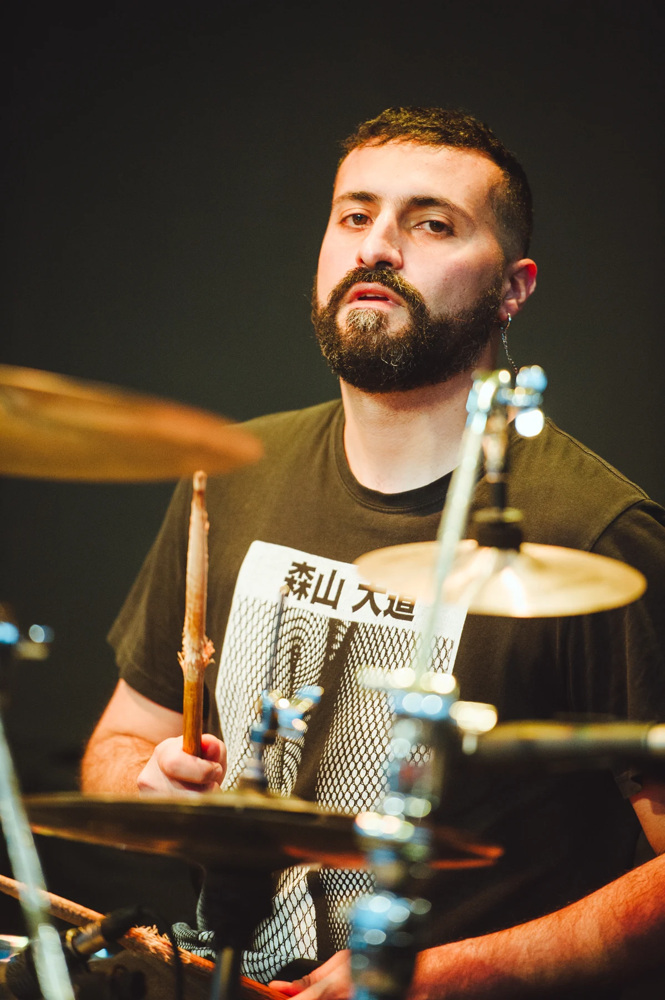

Portafolio visual / Selección inicial
Imágenes que
cuentan historias.
Soy Rodrigo: ilustración, pixel art y música. Este es un espacio para compartir mis imágenes y mi forma de mirar.
Trabajos seleccionados
04 obras · Haz clic para ampliar
Sobre mí
Hola, soy Rodrigo.

La ilustración y el pixel art son parte de mi lenguaje visual. La música también forma parte de mi vida: soy el de la foto, tocando batería. Aquí reúno una primera selección de mis trabajos.